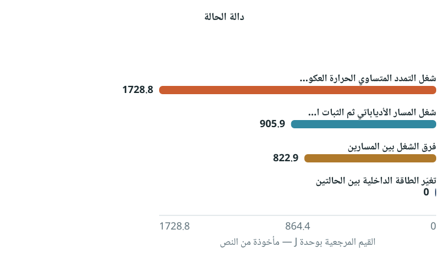

دالة الحالة
State Function
خاصية يعتمد تغيّرها على طرفي المسار لا على الطريق بينهما؛ الحرارة والشغل يعتمدان على المسار، ومجموعهما ΔU = Q − W واحد في كل مسار.
دالة الحالة خاصية للنظام تعتمد على حالته الحاضرة وحدها، فتغيّرها بين حالتين مستقل عن المسار، وتكاملها على دورة مغلقة صفر. الطاقة الداخلية U والإنثالبي H والإنتروبيا S والحرارة T والضغط p والحجم V دوال حالة؛ أما الحرارة Q والشغل W فليسا كذلك: يختلفان باختلاف الطريق ويبقى مجموعهما ΔU واحدًا. المثال المعياري: مول من غاز مثالي عند 300 K يتمدد من 10 L إلى 20 L. في تمدد متساوي الحرارة عكوس يكون W = 1728.8 J وQ = 1728.8 J؛ وفي مسار آخر (تمدد أدياباتي ثم تسخين عند ثبات الحجم) يكون W = 905.9 J وQ = 905.9 J. الشغل والحرارة يختلفان بفارق 822.9 J بين المسارين، والطاقة الداخلية تتغيّر بصفر في الحالتين لأن الحالة النهائية واحدة. هذه المساواة ليست صدفة حسابية، بل أثر أن U دالة حالة.
كيف تعمل الظاهرة؟
الطاقة الداخلية مجموع الطاقة الحركية للجزيئات وطاقة تفاعلها، وكلتاهما دالة للحالة الحاضرة (الحرارة والحجم والتركيب) لا لذاكرة المسار؛ فالجزيء لا يحتفظ بأثر للطريق الذي سلكه. رياضيًا dU تفاضل تام: ∂²U/∂T∂V = ∂²U/∂V∂T، وتكاملها على دورة مغلقة ∮dU = 0. أما Q وW فتفاضلان غير تامين، لا توجد دالة Q(T,V) يُشتق منها، ولهذا تُكتب δQ وδW بعلامة δ لا d. عمليًا يعني ذلك أن ΔU بين حالتين يُحسب بمسار عكوس مريح (كحرارة ثابتة أو حجم ثابت) ثم يُستخدم الناتج نفسه في مسار فعلي معقّد لا يُحسب تكامله مباشرة. وهذه هي الحيلة التي تجعل حسابات الدورات ممكنة: كل دورة مغلقة تعود إلى حالتها فتعطي ∮dU = 0، فيُستبدل حساب التكامل الصعب بموازنة بين الطرفين.
العلاقة بالأرقام
المسار الأول، تمدد متساوي الحرارة عكوس لمول واحد: W = nRT·ln(V₂/V₁) = 1 × 8.314 × 300 × ln 2 = 1728.8 J، وحيث ΔU = 0 للغاز المثالي عند حرارة ثابتة فإن Q = W = 1728.8 J. المسار الثاني، تمدد أدياباتي عكوس حتى 20 L: T₂ = T₁(V₁/V₂)^(γ−1) = 300 × 0.5^0.4 = 227.36 K، وW = n·C_v·(T₁ − T₂) = 12.471 × 72.64 = 905.9 J وQ = 0؛ ثم تسخين عند ثبات الحجم إلى 300 K: Q = n·C_v·(T₂ − T₁) = 905.9 J وW = 0. المجموعان: المسار الأول (Q, W) = (1728.8, 1728.8) والثاني (905.9, 905.9)، والفرق 822.9 J في كل من Q وW، بينما ΔU = Q − W = 0 في المسارين. ولو كان الطرفان مختلفي الحرارة لتغيّر ΔU بينهما لكنه بقي واحدًا في كل المسارات الموصلة إليهما.
مفاهيم متقاربة
الفرق الحاسم بين دالة الحالة وكمية المسار أن الأولى تُقاس بفرق بين قيمتين، والثانية تُقاس بتكامل على الطريق. الحرارة والشغل تبادل طاقة عبر الحدود، فقيمتهما تعتمد على كيفية العبور لا على الحالتين فقط. ولا يعني كون الخاصية دالة حالة أنها مكثفة: الحجم والإنتروبيا دوال حالة شمولية، والحرارة والضغط مكثفتان. كما لا يعني ذلك أنها مستقلة عن التركيب: إنثالبي خليط دالة حالة لكنها تتغيّر بتركيبه، فالحالة في الأنظمة المتغيّرة التركيب تُعرَّف بالتركيب مع T وp.
حدود التطبيق
التعريف يفترض حالات توازن معرّفة، فلا معنى لـ U لنظام غير متوازن قبل أن يستقر، كغاز في صدمة أو خلط جارٍ. وفي الأنظمة المفتوحة تُستبدل ΔU بموازنة حجم تحكم تحمل إنثالبي الكتل الداخلة والخارجة، لأن دالة الحالة تصف كتلة ثابتة. وعندما يتغيّر التركيب تبقى U دالة حالة لكن قيمتها تتوقف على التركيب أيضًا، فيلزم تحديد التركيب مع T وp. وفي المقاييس النانوية يظهر أثر السطح فيكون التوصيف بـT وp وحدهما غير مكتمل، وتُضاف مساحة السطح أو عدد الجزيئات إلى تعريف الحالة.

| الكمية | القيمة | المصدر |
|---|---|---|
| شغل التمدد المتساوي الحرارة العكوس لمول غاز مثالي (10 → 20 L عند 300 K) | 1728.8 J | [1] |
| شغل المسار الأدياباتي ثم الثبات الحجمي بين الحالتين نفسيهما | 905.9 J | [1] |
| فرق الشغل بين المسارين | 822.9 J | [1] |
| تغيّر الطاقة الداخلية بين الحالتين | 0 J | [2] |
المصادر
- 1 Introduction to Chemical Engineering Thermodynamics, 8th ed. (Smith, Van Ness, Abbott, Swihart) — McGraw-Hill (2018). openlibrary.org/api/books?bibkeys=ISBN:9781259696527&format=json&jscmd=data · اطُّلع عليه 2026-11-26
- 2 Atkins' Physical Chemistry, 11th ed. — Oxford University Press (2018). openlibrary.org/api/books?bibkeys=ISBN:9780198769866&format=json&jscmd=data · اطُّلع عليه 2026-11-26
استشهد بهذا المصطلح
الصيغتان مبنيتان من بيانات الصفحة نفسها: العنوان والتاريخ ورابط النسخة المنشورة.
دالة الحالة — State Function. (2026). ديوان المعرفة — انفراد. https://infiradev.com/diwan/terms/term-state-function.html
@misc{term-state-function2026,
title = {دالة الحالة},
titleaddon = {State Function},
howpublished = {{ديوان المعرفة — انفراد} — مرجع علمي عربي},
year = {2026},
url = {https://infiradev.com/diwan/terms/term-state-function.html},
urldate = {2026-11-26},
note = {مراجعة علمية: hermes — مراجعة آلية بالتكليف 2026-11-26}
}
راجعه: hermes — مراجعة آلية بالتكليف 2026-11-26 · 2026-11-26 · آخر تحديث 2026-11-26